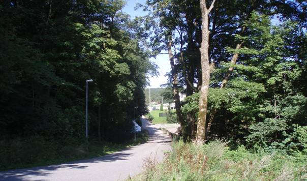
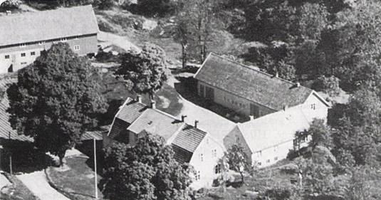

Foto og tekst: Kåre Brøvig
År 1809 startet ny industri i Prestebekken ved Jægersberg. Etter hvert kom møller, papirfabrikk, tekstilindustri, dampbakeri, mekanisk verksted etc
Jegersbergveien er en liten del av Postveien eller Kongeveien til Oslo som ble ferdig i 1804. Går vi en tur fra Oddernes kirke langs Jegersbergveien, kommer vi til Jegersbergveien 12, gården Jægersberg.
Jegersbergveien med den fine alleen plantet av general Oscar Wergeland.
Jegersbergveien inn til gården.
Fin steinhvelvbro. Prestebekken renner under Jegersbergveien. Jegersbergveien krysser Prestebekken på en fin gammel steinhvelvbro. Der ser en snart den gamle stemmen ved Nedre Mølle og rester etter installasjoner.
Prestesønnen som ble gårdbruker og industriherre.
Huset ble bygd omkring 1810, og byggherre var Niels Winther Luth Jæger som levde fra 1772 til 1840. Jæger var en allsidig mann, kaptein, handelsmann, industriherre og overtollbetjent. Han var sønn av sokneprest i Fyresdal, Ditlef Hansen Luth, og var bare to år da faren og moren Claudine Marie Winther døde i 1774. Han ble adoptert av neste sokneprest i Fyresdal, Ephraim Jæger, som var født på Møen i Danmark og gift med Birgitte Topdal. Hovedkirka i Fyresdal heter Moland kirke.
Jæger kjøpte litt jord av prestegården i Oddernes og mye utmark fra Sødal. Det ble til gården Jægersberg. Bygningene på Jægersberg er beskrevet i en branntakst fra 1814:
Ny hovedbygning med 16 værelser, kjøkken, skorstein og to kakkelovner, heste- og kustall, låve og smie.
Nicolai Wergeland ville kalle gården ”Jægerspriis”, da mannen for sitt anlegg tilkommer av byen både lov og pris.
Foto fra Oddernes Bygdebok /Gardshistorie. Oddernes Bygdebok har mye stoff om Jægersberg.
Niels Winther Luth Jæger arvet en eiendom i Elvegata etter prostinne Birgithe Jæger, adoptivmoren. I Elvegata var det stort hus, 5 bakerovner, uthus, dyr og stor sjøbu med 19 rom. Han trengte mel til bakeriet sitt, og han så mulighetene til å bygge møller i Prestebekken.
Det begynte i 1809. Jæger fikk festet de gamle kvernrettighetene som lå til Prestegården. Kulturhistorien forteller at klostrene og prestene trolig var først ute med å bygge kverner, så tok bøndene etter. Kverna måtte Jæger kjøpe av Michael Glückstad og Bernt Holm. Presten skulle få malt fritt 30 tønner korn årlig. Dessuten skulle halvparten av ålen som gikk i ålekassen, tilfalle Oddernes sokneprest. På 1700 tallet var det også sagbruk i fossen. Fra gården Sødal festet Jæger dam- og stemmeretten i vannene som hadde avløp til Prestebekken. Det var behov for et betydelig reguleringsarbeid. Oppsitterne skulle forplikte seg til å levere nødvendige stein og tømmer til stemmene. I 1811 fikk han kjøpt Sødals to kvernplasser med kverner, blant annet mot fri maling av 60-80 tønner korn årlig.
Det er vanlig å si at kvern blir drevet med kvernkall på vertikal aksel, og at mølle blir drevet med vannhjul på horisontal aksel. Jæger skulle bygge møller. To meget skjønne vannmøllebruk ble oppført i 1812/13, Nedre og Øvre Mølle. Bygningene var gode med teglstein på taket.
Vannet ble samlet i en stor dam ovenfor stemmen ved Nedre Mølle.I taksten fra 1814 heter det:
Nedre Mølle hadde to sammalt, to sikte- og to hele- og en halve gryns kvernsteiner. Det var bolig for møllemesteren og møllesvennene.
Fra Postveien tar vi til venstre og inn på Mølleveien, og ser at det er behov for rydding i vegetasjonen.
Jægersberg ble det første sentrum for tekstilindustri på Sørlandet. Et stopp ved Bakerstemmen eller Mellomste Mølle. Her skjedde noe etter 1824. Etter den driftige kaptein von Jæger, overtok skipskaptein og kaperfører Iver Albrecht Dahm Jægersberg i 1824. Han var født i København i 1784 og døde i 1862. Han var gift med Catharina Olrog fra Kristiansand. Iver A. Dahm kjøpte Jægersberg med møllebruket.
På Kristiansands 200-årige jubelfest, som kunne feires den 29. oktober 1841, stiftet noen menn i byen ”Selskapet for den innenlandske Industris Fremme.” I det første faste styret ble proprietær I. A. Dahm på Jægersberg med. Selskapet fikk startet et bomullsveveri med 6 vevstoler. Det ble ikke drevet med mekanisk kraft, og fikk kort levetid. Da vannkraften på Jægersberg i 1845 kunne utnyttes til mekanisk drift av veveri og spinneri, betydde det et avgjørende gjennombrudd for tekstilindustrien.
Det var Iver A. Dahm som satt med alle rettigheter på Jægersberg etter Jæger. Han gikk sjøl i gang med å planlegge mekanisk veveri, mens han overlot visse rettigheter til kjøpmann Peter Julius Lilloe som ville begynne med mekanisk spinneri. Begge deler sto ferdig i 1845, trolig først spinneriet og så veveriet.
Den store trebygningen ved Mellomste Mølle var bygd over Prestebekken med innkjørsel fra begge sider av dalen, fra Gimlemoen og fra Mølleveien eller ”Vaktveien”.
Kjøpmann P. J. Lilloe var en meget interessert forretningsmann, full av initiativ. Han drev først manufakturforretning, og ved siden av den hadde han Sødal kalkbrenneri.
Spinneriet til Lilloe ble drevet ved ”4 hæstes kraft”. Det hadde mester og 20 arbeidere, vesentlig kvinner, unge gutter og barn. Veveriet til Dahm gikk også med vannkraft, og hadde mester og fem arbeidere. I 1850 var spinneriet kommet opp i en produksjon på 250 pund garn av forskjellige nummer daglig, og der var 30 arbeidere foruten mesteren. Veveriet hadde 14 vevstoler og 10 arbeidere foruten mesteren. Produksjonen per uke var 1600 alen bomullslerret av forskjellig slag. På industriutstillingen i 1849 var det flere slags bomullstøy og lerret fra Dahms fabrikker på Jægersberg. Varer fra Lilloes bomullsspinneri var også med.
Dahm fortsatte sitt veveri i hvert fall til 1854. Møllene gikk sin vante gang. Peter Julius Lilloe flyttet i 1850 sitt spinneri fra Jægersberg til Høie for å få adgang til større kraftmenger. Her bygde han en spinneribygning i tre etasjer og med ca. 50 arbeidere. Spinneriet ble drevet med vannkraft fra vannhjul i fossen. Lilloe skaffet seg spinnerimester fra England, Mr. Hixon. Han startet et lite veveri for egen regning. Veveriet ble utvidet av Hixons etterfølger. Da gikk spinneri og veveri side om side til 1882. De to bedriftene kom da under felles eierskap og ledelse, og fikk navnet Høie Fabrikker.
Vi går videre inn veien til stemmen ved Nedre Jægersbergvann og Øvre Mølle.
Øvre mølle var minst.
Ifølge taksten fra 1814, i Jægers tid, hadde Øvre Mølle tre sammalt kverner og to siktekverner. Eldre folk husker at Øvre Mølle var i bruk etter 1945, blant annet for maling av soyabønner. Den store bygningen ved Bagerstemmen ble revet flere år senere. Restene er kulturminner vi må ta godt vare på.
Under stemmen ved nedre Jægersbergvann kan en se rester etter rør og turbin av nyere dato. Vi kan ta oss opp på stemmen og følge en sti bort til Østre kilen.
Den gamle veien inn til Papirmølla kom delvis under vann da det ble satt opp stem ved Østre Kilen.
Den gamle veien inn til Papirmølla kom delvis under vann da det ble satt opp stem ved Østre Kilen.
Det var ved fossen fra det som tidligere hette Sødalsvannet, at bøndene fra Sødal hadde sine kverner. Papirmølla overtok energien i fossen
Jæger kjøpte også papirmølla som Haugianere hadde bygd ved Fennefossen, og satte den opp ved Papirmøllevannet i 1813/14. Papirmøllevannet kalles nå oftest Øvre Jægersbergvann.
Taksten i 1814 nevner at fabrikkbygningen hadde 7 rom til maskineri og innretning, en bygning til limkokeri med skorstein og 2 kopperpanner. Der var eget tørkehus. Boligen til arbeidsfolkene var i to etasjer med 7 værelser og kjøkken med skorstein.
Det ble laget mange forskjellige sorter papir. Råstoffet var kluter, men det var vanskelig å skaffe nok. Det ble stadig avertert etter filler, gamle sekker, utbrukte seil,fiskegarn og gammelt tauverk. Bestillingene var så mange at langt fra alle kunne effektueres.
Det var et kostbart anlegg Jæger hadde bygd opp. Seks stemmer av gråsteinsmur, hus og møllebruk, papirmølla med bygninger og gårdsbruket med de store og kostbare bygningene. Han trengte mye lånekapital. Det var vanskelig å skaffe penger. Han måtte derfor innskrenke virksomheten, og han ville selge papirfabrikken.
Utviklingen viste at møllene var en sikker og god bedrift. Papirfabrikken gikk det ikke så godt med. I 1816 averterte Jæger papirfabrikken til salgs.
Papirfabrikken ble solgt i 1816 til Jægers egne folk, Cornelius Møller og Gudbrann Haagensen. De to startet også et brennevinsbrenneri på Jægersberg og drev også stampemølle.
I 1818 ble det opplyst fra Magistraten at Papirfabrikken var stoppet opp ”formedelst mangel på klude”. Jæger fortsatte med møllene, men i 1824 kunne han ikke klare det lenger, og møllene ble solgt på tvangsauksjon.
I 1822 ble Jæger utnevnt til overtollbetjent i Mandal, og ny eier overtok gården og møllene i 1824. En av sønnene til Jæger, Ditlef Ephraim Jæger, var sokneprest i Oddernes og prost i Torridal prosti fra 1862 til 1866. Han var blant stifterne av Det norske Misjonsselskap. Gravstøtten hans kan en se på nordsiden av Oddernes kirke ved inngangen til sakristiet. Den har en fin innskrift:
”Ved venligt Sind - ved Ydmykhed
Han vandt saa Manges Kjærlighed
Derfor har Venner i hans Menighed
Her villet hædre dette Hvilested”
1802-1866.
Leewy forteller at i 1842 fikk badehuset på Odderøya en konkurrent i det proprietær Dahm innrettet tre rom på Jægersberg til styrtbad. Dahm lå lavere i pris. Et bad hos ham kostet bare to skilling.
Da Maadeholdssælskabet i Oddernæs Sogn ble stiftet i 1841, ble Dahm med i styret. Sokneprest Salvesen var formann. Det var de beste 100 menn i bygda som ville opplyse allmuen om faren ved alkoholmisbruk.
Vi følger veien forbi badeplassen og Kalkheia og videre opp til Kroktjønn.
Fra Kroktjønn renner bekken videre i litt ulendt terreng ned mot Papirmøllevannet/Øvre Jægersbergvann.
Bekken fra Kyrkjønn renner gjennom Sødalsmyra og ned i Kroktjønn
Bekken fra Kyrkjønn renner gjennom Sødalsmyra og ned i Kroktjønn
Fra Kyrtjønn renner bekken gjennom Sødalsmyra til Kroktjønn. I bakgrunnen ser vi rester etter den gamle skytebanen som ble tatt bort i 2008.
Vi følger stien opp til Salvestjønn. Stien går delvis langs den kunstige bekken under fjellet. Tidligere gikk bekken ned til Øygardstjønn og videre til Gill hvor det var sagbruk. For å få vannet ned til Prestebekken, ble bekken lagt om.
Stemmen ved Salvestjønn er nevnt i kontrakt 1810. Det er her Slåttebekken/ Prestebekken har sitt utspring. Vi er på Skråstadheia som er blitt et naturreservat på nesten 10 kvadratkilometer. Det er naturlig å ta en tur til Den Omvendte Båd før vi går ned Kyrdalen og tilbake til Sødalsmyra. På vei ned fra Skråstadheia kan vi ta av midt på Sødalsmyra, videre ned Budalen og ser broa der Slåttebekken og bekken fra Budalen møtes.
Ivar A. Dahm, som overtok etter Jæger, var allsidig. Han ville også bruke vannet ved Nedre Mølle til å knuse bein, stampe vadmel og male kritt.
Severin P. Dahm f. 1829 overtok etter faren i 1862. På Jægersberg gikk den gamle industrivirksomheten inn i en ny fase etter at Severin Dahm i 1862 overtok etter faren.Avfall fra møllebruk og bakeri gikk til grisemat. Han hadde ifølge folketellingen i 1875 hele 23 griser, 8 hester og 6 kyr.
Severin P. Dahm utvidet med dampbakeri, mekanisk verksted etc. Det ble altså brukt dampkraft i tillegg til vannkraften som dreiv møllene. Han var en initiativrik og interessert industrimann. I 1875 fikk han etter søknad amtstingets tillatelse til å benytte et ”lokomotiv” som transportmiddel mellom Jægersberg og Lahelle. Det var trolig en slags bil drevet med dampmaskin. Dahm bygget også dampbåter på verkstedet, og i 1879 ble en dampbåt fraktet over land fra Jægersberg til Lahelle. Det gikk til slutt ut for ham.
Søskentreet på Jægersberg er fredet. Det skal minne oss om tre av barna til Nicolai Wergeland: Henrik, Camilla og Oscar Wergeland. De er runnet av samme rot.
I 1880 ble det utstedt auksjonsskjøte til proprietær Daniel Isaachsen, Øvre Kongsgaard. I 1881 kjøpte han vann- og stemmingsretten i Stitjønn av Nedre Gjel. Isaachsen solgte 1898 til garveribestyrer Johan Moe. Panteboken på Statsarkivet forteller at Moe i 1904 leide ut noen av lokalene i Jægersbergs Mellomste mølle til militæretaten. Disse ble magasiner for 1. og 2. Kompani av Nedenes Landstorm bataljon. 19. september 1919 inngikk Forsvaret en kontrakt om leie av Øvre og Midtre mølle. Etter at møllene var reparert og utbedret, flyttet Lister bataljon og landvernsbataljonen inn i disse i 1921. Johan Moe solgte vannkraften i 1911/12 til A/S Major & Co. Hovedbruket solgte han til kjøpmann H.C. Malterud. Vannkraften ble i 1919 solgt til kommunen, mens mesteparten av Malteruds eiendom i 1916 gikk til barneheimen ”Ebenezer”. I 1953 overtok familien Engebu eiendommen.
Kåre Brøvig 2008